| 项目名称： | 校园二手交易系统 |
| 学号： | 241220163 |
| 姓名： | 尹照达 |
| 实验： | 实验三 软件实现与构建 |
| 日期： | 2026-11-22 |
| 仓库： | https://github.com/kubi0126/pa3-secondhand-trading |
| 实验二模块 | 实验三实现 | 覆盖需求 |
|---|---|---|
| M1 账号与权限 | services/auth_service.py、web/routes_auth.py、登录装饰器 | REQ-001/002/022 |
| M2 商品管理 | services/item_service.py、domain/state_machines.py | REQ-003/004/006/012/019/029 |
| M3 审核与违规处置 | services/audit_service.py、web/routes_admin.py | REQ-005/020 |
| M4 浏览与查询 | services/query_service.py、repositories/item_repo.py | REQ-007/025 |
| M5 预约与交易 | services/reservation_service.py、repositories/reservation_repo.py | REQ-008–011/013/017/018/023/030/031 |
| M6 日志与统计 | services/log_service.py、services/stat_service.py | REQ-015/016 |
| M7 定时任务 | scheduler.py、flask expire | REQ-010/011 |
| M8 数据字典 | services/dict_service.py、web/routes_admin.py | REQ-003/014 |
| 项 | 选择 | 说明 |
|---|---|---|
| 语言 | Python 3.13 | 课程允许 C/C++、Java、Python；本机无 JDK |
| Web 框架 | Flask 3.1 | 路由清晰，便于把 UML 服务映射为控制器 |
| 模板 | Jinja2 + HTML/CSS | 服务端渲染，复用实验二视觉规范 |
| 数据库 | SQLite 3.45（WAL） | 单文件、免安装，替代实验二的 MySQL |
| 密码 | bcrypt（cost=12） | 加盐哈希，不保存明文 |
| 测试 | pytest + pytest-cov | 75 个用例，覆盖率 81% |
| 风格 | pylint + .pylintrc | 源码与测试 10.00/10 |
| 设计 | 实现 | 差异原因与影响 |
|---|---|---|
| JVM 应用 | Python + Flask | 本机无 JDK；缩短环境搭建时间；分层与状态机设计保持不变 |
| MySQL 8.0 | SQLite | 单机演示；字段、CHECK、唯一约束同名同义；生成列唯一索引改为部分唯一索引 |
| Nginx + 独立进程 | Flask 开发服务器 | 课程原型不涉及生产部署；后续可换 WSGI 服务器与 Nginx |
| REST 接口层 | Flask 资源路由 + 表单 | 服务层/仓储层仍分层；后续可替换为 JSON API |
| 实验二图 | 实验三代码 |
|---|---|
| 用例图-访客买家/卖家/管理端 | web/routes_items.py、routes_buyer.py、routes_seller.py、routes_admin.py |
| 类图-领域模型 | domain/models.py（8 个 dataclass） |
| 商品状态图 / 预约状态图 | domain/state_machines.py（允许/禁止转换） |
| 活动图-发布审核 | ItemService.create_draft/submit、AuditService.approve/reject |
| 时序图-创建预约（幂等/事务） | ReservationService.create + RequestRepository |
| 时序图-违规下架（权限/联动） | AuditService.violation_delist |
| 组件图 / 部署图 | web/ → services/ → repositories/ → SQLite |
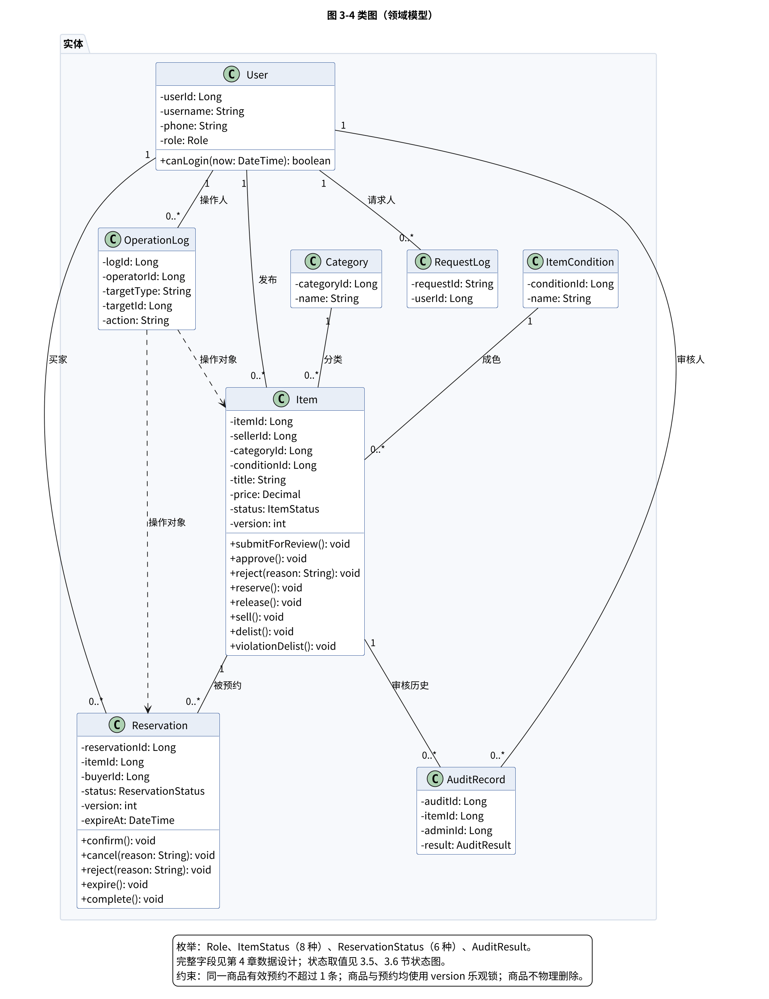
@dataclass
class Item:
item_id: int
seller_id: int
category_id: int
condition_id: int
title: str
description: str | None
price: float
status: ItemStatus
version: int
published_at: str | None
created_at: str
updated_at: str
str, Enum、仓储如何承担 SQL、服务如何承担用例编排；以及为什么没有把 SQL 写进实体。
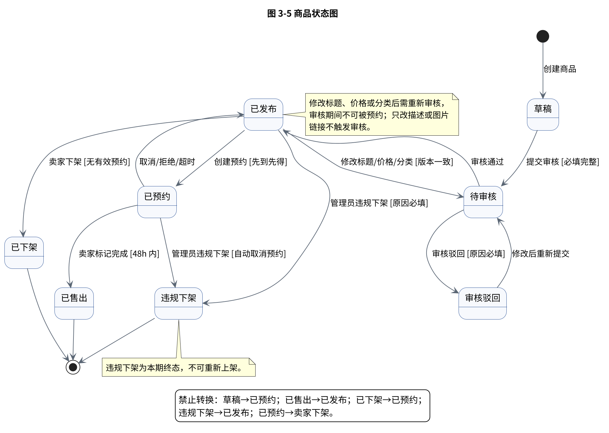
ITEM_TRANSITIONS = {
ItemStatus.DRAFT: frozenset({ItemStatus.PENDING_REVIEW}),
ItemStatus.PENDING_REVIEW: frozenset({ItemStatus.PUBLISHED, ItemStatus.REJECTED}),
ItemStatus.REJECTED: frozenset({ItemStatus.PENDING_REVIEW}),
ItemStatus.PUBLISHED: frozenset({
ItemStatus.PENDING_REVIEW, ItemStatus.RESERVED,
ItemStatus.DELISTED, ItemStatus.VIOLATION_DELISTED,
}),
ItemStatus.RESERVED: frozenset({
ItemStatus.PUBLISHED, ItemStatus.SOLD, ItemStatus.VIOLATION_DELISTED,
}),
ItemStatus.SOLD: frozenset(),
ItemStatus.DELISTED: frozenset(),
ItemStatus.VIOLATION_DELISTED: frozenset(),
}
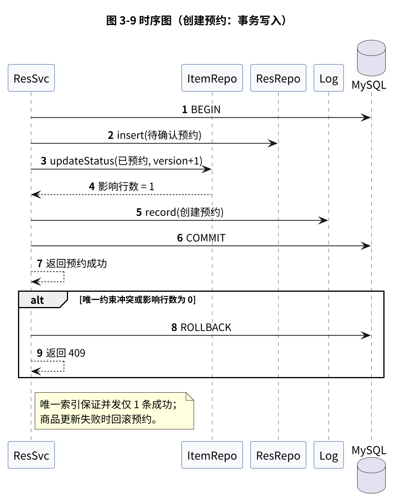
with transaction() as conn: # BEGIN IMMEDIATE
_start_request(conn, request_id) # request_log 原子占位
item = ItemRepository(conn).find_by_id(item_id)
if item.status is not ItemStatus.PUBLISHED: ...
if version != item.version: ... # 乐观锁
recent = find_recent_by_buyer_item(...) # 60 秒重复
reservation_id = insert_reservation(...)
change_item_status(PUBLISHED -> RESERVED, version=item.version)
insert_operation_log(...)
mark_request_success(request_id, reservation_id)
# COMMIT；任一步失败整体回滚
tests/test_reservations.py 与 tests/test_concurrency.py。
| 包 | 文件数 | 物理行 | 代码行（非空非注释） |
|---|---|---|---|
| domain | 5 | 608 | 503 |
| repositories | 9 | 954 | 825 |
| services | 10 | 1103 | 956 |
| web | 9 | 925 | 772 |
| 应用基础（config/db/seed/cli 等） | 8 | 561 | 444 |
| 合计 | 41 | 4151 | 3500 |
口径：python tools/count_loc.py；不含测试、Jinja 模板、CSS 与构建产物；Jinja 模板 1044 行、CSS 496 行另计。
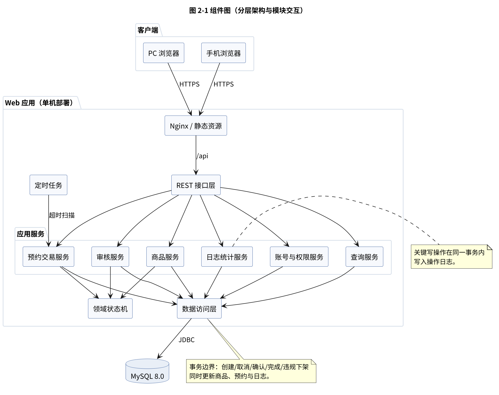
-- 同一商品同一时刻最多一条有效预约
CREATE UNIQUE INDEX uk_active_item ON reservation (item_id)
WHERE status IN ('PENDING_CONFIRM', 'CONFIRMED');
-- 同一买家对同一商品最多一条进行中预约
CREATE UNIQUE INDEX uk_active_buyer_item ON reservation (buyer_id, item_id)
WHERE status IN ('PENDING_CONFIRM', 'CONFIRMED');
-- 幂等请求号
CREATE UNIQUE INDEX uk_reservation_request ON reservation (request_id)
WHERE request_id IS NOT NULL;
BEGIN IMMEDIATE + 状态更新 + 部分唯一索引共同保证；为什么不用悲观的 SELECT FOR UPDATE；重复请求为什么返回首次预约而不是报错。
with transaction() as conn:
active = find_active_by_item(item_id)
if active:
change_status(active, CANCELLED, reason="商品被下架")
log(RESERVATION_CANCEL)
change_status(item, VIOLATION_DELISTED)
log(ITEM_VIOLATION)
# 任一步失败：ROLLBACK，不留下孤立预约或错误商品状态
| 风险 | 措施 | 验证 |
|---|---|---|
| 密码泄露 | bcrypt 加盐哈希，cost=12 | 数据库无明文；test_password_is_hashed |
| 暴力登录 | 连续失败 5 次锁定 15 分钟 | test_login_failure_locks_account |
| 越权 | login_required/admin_required/seller_required + 服务层数据范围校验 | test_non_admin_cannot_open_admin_pages 等 |
| CSRF | 会话 token + 表单隐藏字段，POST 校验 | test_csrf_rejects_post_without_token |
| SQL 注入 | 全部参数化查询，不拼接用户输入 | 代码审查 + 仓储层统一 ? 占位 |
| 恶意图片链接 | 仅允许 http/https | test_invalid_price_and_url |
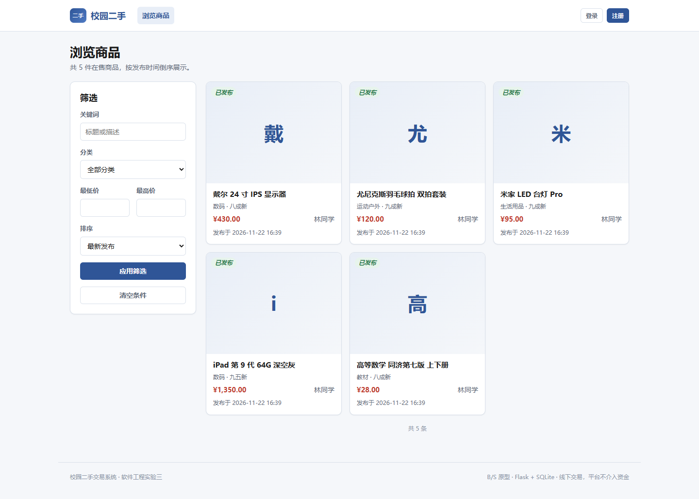
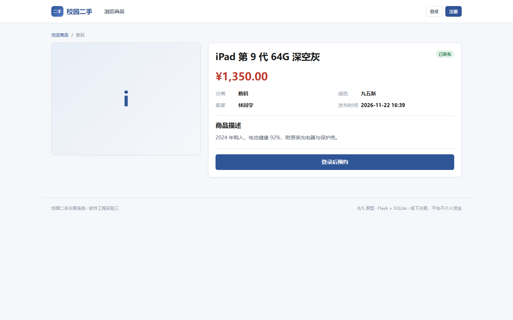
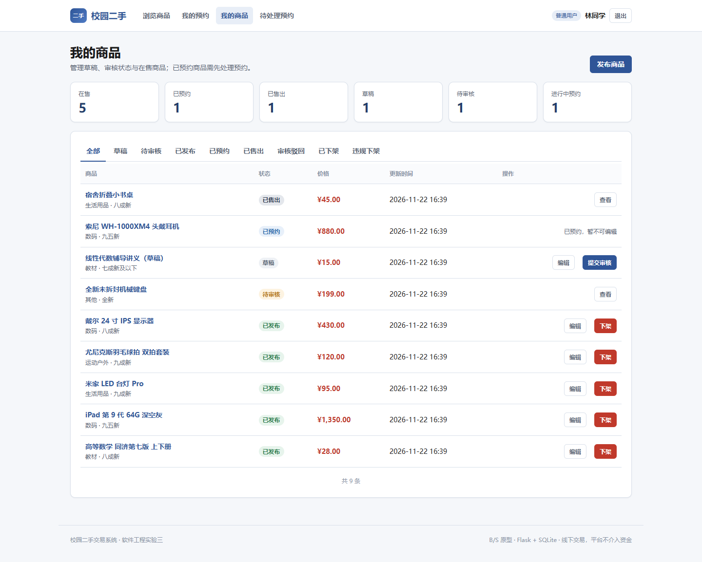
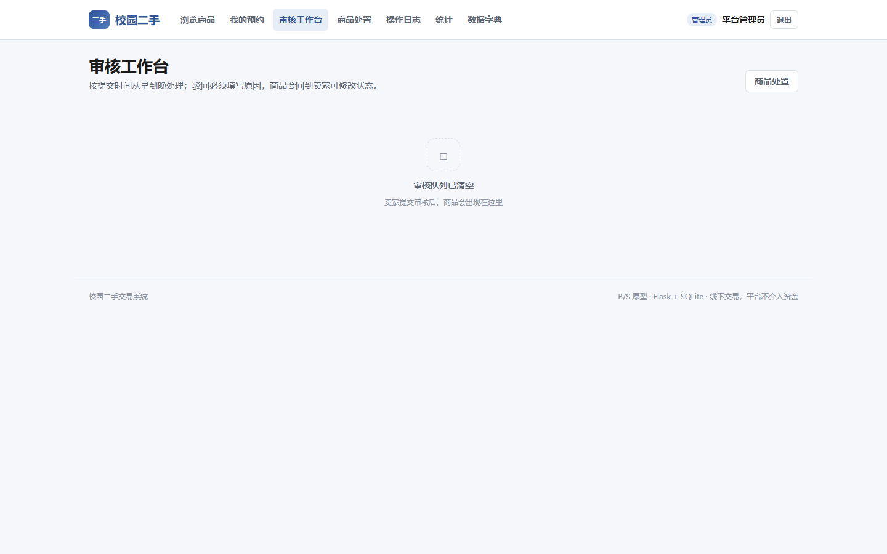
docs/ai_usage_log.md 的记录 01–09。
| 场景 | 生成结果 | 人工修改 |
|---|---|---|
| 数据库 schema | 8 张表、索引、CHECK、部分唯一索引 | 修正 SQLite 不支持的生成列写法；补 request_log 冲突处理 |
| 领域与状态机 | 实体、枚举、允许/禁止转换 | 删除“已发布→已售出”“已预约→下架”等错误转换 |
| 预约服务 | 事务、幂等、60 秒重复、乐观锁 | 把幂等检查移入事务；修正重复请求的返回路径 |
| Web 页面 | 16 个 Jinja 模板、表单、分页 | 修复 request.app、补卖家完成入口、表格单元格布局 |
| 测试 | 状态机/权限/并发/页面用例 | 统一校验异常类型；测试环境降低 bcrypt cost |
| 案例 | 模型生成 | 问题 | 修正与启示 |
|---|---|---|---|
| Flask 配置读取 | request.app.config[...] | request 没有 app 属性，页面 500 | 改用 current_app.config；必须运行验证 |
| 校验异常 | money/text 抛 ValueError | 路由只捕获 AppError，非法输入变成 500 | 统一抛 ValidationError；补异常分支测试 |
| 卖家完成入口 | 只有服务方法，没有页面入口 | U18 无法演示 | 补“已确认”标签与“标记交易完成”按钮；按用例走查 |
cd code python -m venv .venv .venv\Scripts\activate pip install -r requirements.txt python -m secondhand # 浏览器访问 http://127.0.0.1:5000
演示账号：管理员 admin / Admin@123；卖家/买家 alice / User@123；买家 bob / User@123。
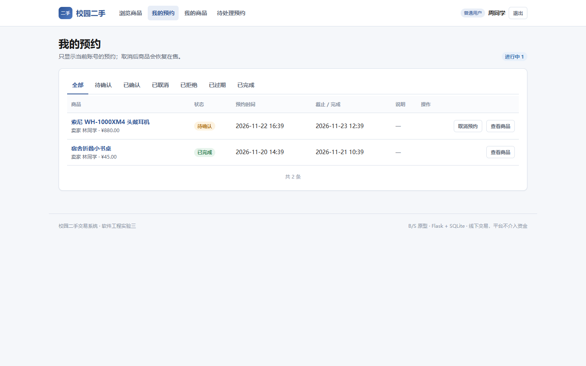
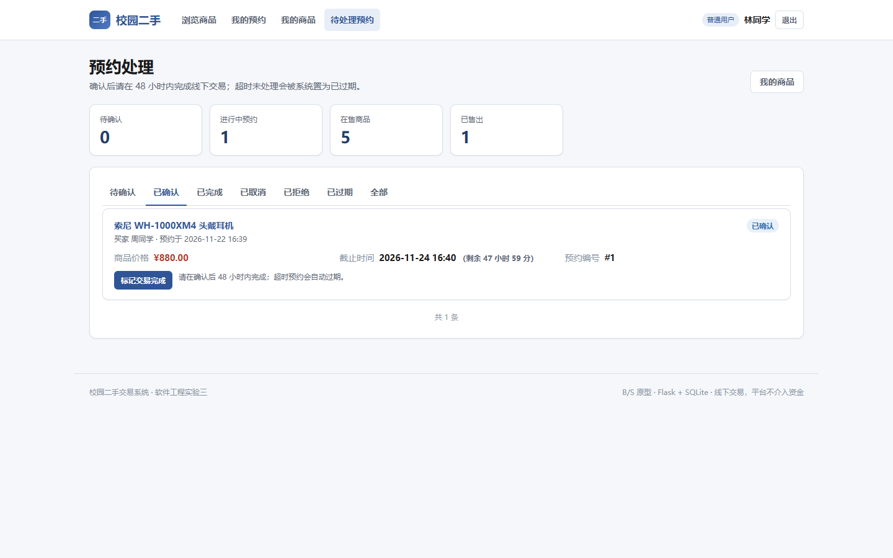
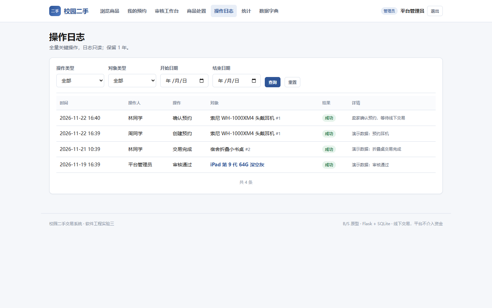
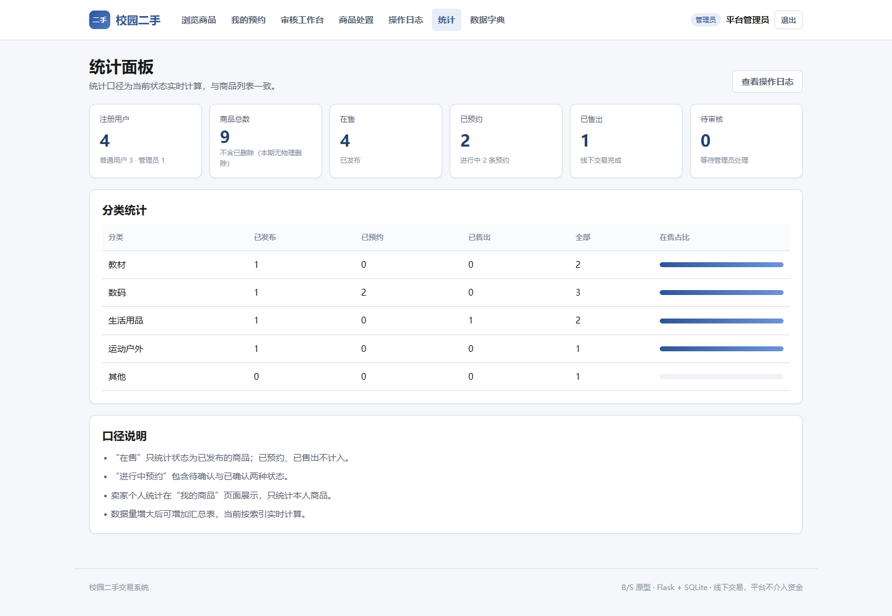
| 命令 | 结果 |
|---|---|
python -m pytest -q | 75 passed in 8.58s |
pytest --cov=secondhand | 2132 statements，396 missed，81% |
python -m pylint secondhand tests | 10.00/10（项目 .pylintrc） |
python tools/count_loc.py | Python 3500 行（非空非注释） |
request_log 提供 7 天清理命令。| 项 | 内容 |
|---|---|
| 远程仓库 | https://github.com/kubi0126/pa3-secondhand-trading |
| 默认分支 | main |
| 本地目录 | C:\Users\尹照达\Desktop\作业\软件工程\pa3 |
| 可见性 | Public |
| 提交范围 | code/、UML/、docs/、report/；不提交 var/、__pycache__、构建产物 |
| 提交 | 日期 | 说明 |
|---|---|---|
bb339c5 | 2026-11-22 | feat(code): 实现校园二手交易系统核心模块（schema、领域、仓储、服务、页面） |
f2208e2 | 2026-11-22 | test(code): 75 个单元/集成/并发测试与代码质量配置 |
b180189 | 2026-11-22 | docs(pa3): UML、运行截图、测试报告与报告模板 |
6f2737e | 2026-11-22 | chore: 忽略课程要求原文 PDF |
表中列出 4 次主要提交；截图后另有报告/文档修订提交，完整记录以远程仓库为准。
var/ 和生成物排除；如果使用了分支/标签，也写清楚。
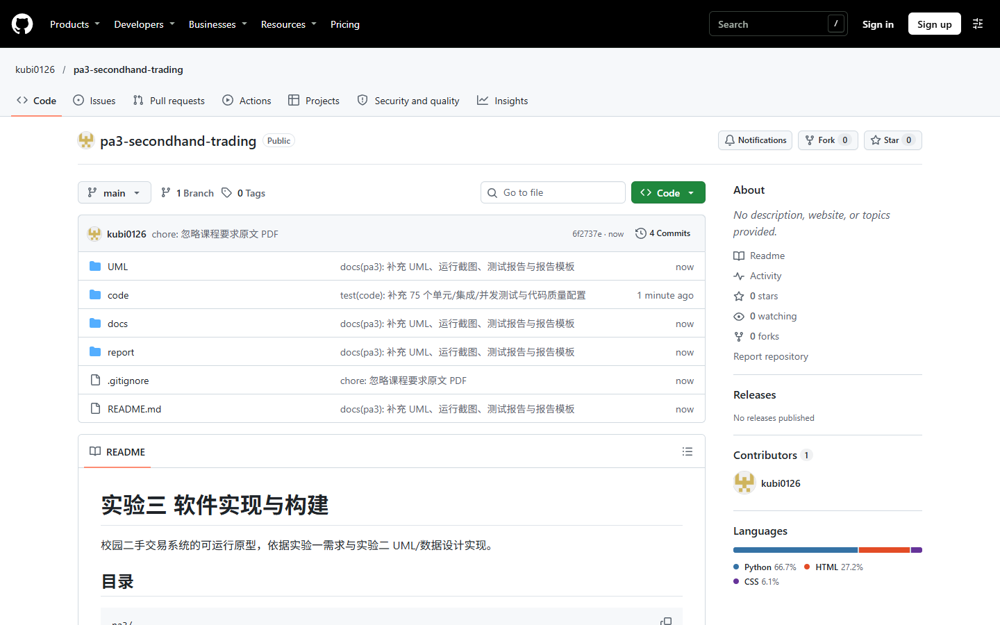
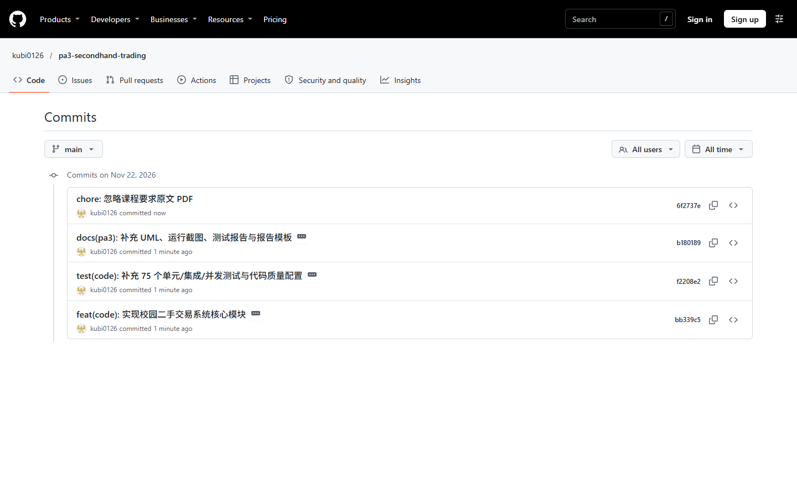
| 需求组 | 实现位置 | 主要测试 |
|---|---|---|
| REQ-001/002/022 | auth_service.py、web/auth.py、web/csrf.py | test_auth.py、test_web.py |
| REQ-003/004/006/012/019/029 | item_service.py、state_machines.py、item_repo.py | test_items.py、test_state_machines.py |
| REQ-005/020 | audit_service.py | test_items.py、test_reservations.py |
| REQ-007/025 | query_service.py、items/list.html、items/detail.html | test_web.py |
| REQ-008–011/013/017/018/023/030/031 | reservation_service.py、reservation_repo.py | test_reservations.py、test_concurrency.py |
| REQ-015/016 | log_service.py、stat_service.py、logs.html | test_reservations.py、test_web.py |
| REQ-021/024/025/026 | 索引/分页、响应式 CSS、范围约束 | 代码审查 + 页面截图 |
| REQ-027/028 | 本期不实现（已拒绝/待确认） | — |
# 启动 cd code && pip install -r requirements.txt && python -m secondhand # 测试 / 风格 / 规模 python -m pytest -q python -m pytest --cov=secondhand --cov-report=term-missing python -m pylint secondhand tests python tools/count_loc.py # 超时扫描 / 清理幂等记录 flask --app app expire flask --app app cleanup-requests --days 7
提交结构：实验3_241220163_尹照达/ 下 实验报告.pdf、UML/（13 对 png+puml）、code/（源码、测试、README）。